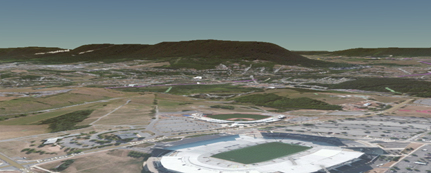

Terrain describes the shape or surface geometry of the globe. A terrain dataset is sometimes known as a Digital Elevation Model (DEM).
Cesium supports a wide variety of standard terrain formats and servers, not just the few tilesets shown here. See the Terrain Tutorial for information about hooking up Cesium to your terrain data.
| Terrain | Description | Provider | |
|
STK World Terrain | High-resolution, mesh-based terrain for the entire globe. Free for use on the Internet. Closed-network options are available. |
|
|  | PAMap Terrain | High-resolution, Pennsylvania terrain elevation tileset useful for terrain surface visualization. Free for use on the Internet. Closed-network options are available. |
|
Images in the table above use terrain and imagery data Copyright © Analytical Graphics, Inc., CGIAR-CSI, Microsoft Corporation, Earthstar Geographics SIO, NASA, Harris Corp., Earthstar Geographics LLC, and USGS.
Want to have your terrain listed here? Fork cesium-assets-list, add your terrain, and open a pull request. We'll also promote your terrain on the Cesium forum, blog, and twitter.